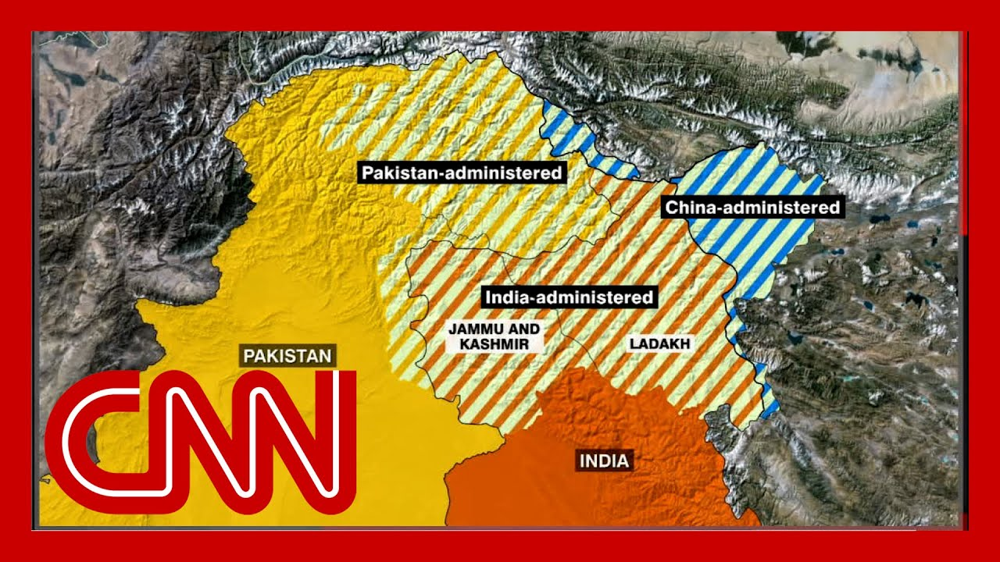

来B站一起耍【Global每日英语简报】
【印度对巴基斯坦发动袭击以报复游客屠杀事件】
Summary: Welcome to the brief. I'm Jim Sciutto in New York. We begin early today with breaking news, India launching a military operation targeting what it calls terrorist infrastructure inside Pakistan and Pakistan administered Kashmir.
摘要： 欢迎收看简报。我是吉姆·西乌托，在纽约为您报道。今天我们早些时候开始报道突发新闻，印度发动军事行动，目标是其所谓的巴基斯坦境内和巴基斯坦控制的克什米尔的恐怖主义基础设施。

⏱️ Estimated Reading Time: 14 min
Those are the sounds of explosions.
那是爆炸的声音。
During those strikes, India says it struck nine targets, adding that none of them are Pakistani military facilities.
在这些袭击中，印度称击中了九个目标，并补充说其中没有巴基斯坦军事设施。
A Pakistani military spokesperson says the country will respond to those attacks, adding that at least three people have been killed in the Indian strikes.
巴基斯坦军方发言人表示，该国将对这些袭击作出回应，并补充说印度的袭击已造成至少三人死亡。
This comes after gunmen killed 26 people in Indian administered Kashmir last month.
此前，上个月武装分子在印度控制的克什米尔杀害了26人。
India blamed Pakistan for those attacks.
印度将这些袭击归咎于巴基斯坦。
Nic Robertson is live now in Islamabad, and it's worth reminding our viewers that these are two nuclear armed nations that have fired at each other before.
尼克·罗伯逊现在在伊斯兰堡现场报道，值得提醒观众的是，这是两个曾互相开火的核武国家。
Tell us what the situation is now and concerns about escalation now.
请告诉我们目前的情况以及对局势升级的担忧。
There's a real concern about escalation.
对局势升级确实存在担忧。
Pakistan vowed that if India attacked that they would respond.
巴基斯坦誓言如果印度发动袭击，他们将作出回应。
That was part of their military doctrine.
这是他们军事学说的一部分。
They believe, and I've been speaking over the past few days with very senior, very senior security officials here.
他们相信，过去几天我一直在与这里非常高级的安全官员交谈。
And they believe that this incident inside Indian controlled Kashmir, where 26 civilians were killed, that India blamed on Pakistan, that Pakistan denied, they believe that this had now come up.
他们认为，印度控制的克什米尔境内发生的26名平民被杀事件，印度归咎于巴基斯坦，而巴基斯坦否认，他们认为现在事态已经升级。
The relations with India had now come to a moment, a defining moment where Pakistan needs to take a definitive stand because India has threatened to cut off water supplies coming down three major rivers.
与印度的关系已经到了一个关键时刻，巴基斯坦需要采取明确立场，因为印度威胁要切断三条主要河流的水源供应。
Vital existential security officials describe the water from those rivers.
安全官员将这些河流的水描述为关乎生存的关键。
So this is the sort of context to why that this is at a moment of extreme potential escalation.
这就是为什么当前局势可能急剧升级的背景。
Pakistani security officials are saying that they are right now that Air Force right now is in the in the throes of delivering what they describe as a crushing blow to India as a response for this strike.
巴基斯坦安全官员表示，他们的空军正在准备对印度实施他们所谓的毁灭性打击，以回应此次袭击。
Previously, when I've spoken with Pakistani officials over the past few days, they've said that India's retaliatory strike, which they thought was coming.
此前几天我与巴基斯坦官员交谈时，他们表示预计印度会进行报复性打击。
They said if it just came in Pakistan administered Kashmir, that would be something that would be more easily tolerable than striking Pakistan proper, if you will.
他们说，如果袭击仅限于巴基斯坦控制的克什米尔，那会比直接袭击巴基斯坦本土更容易容忍。
At least two of the strikes we understand this evening and we're getting these early details are in Pakistan proper.
据我们今晚了解，至少两次袭击发生在巴基斯坦本土，我们正在获取这些初步细节。
This tells me, from what the officials have been speaking about, that this will demand from the Pakistani side a much higher level of response.
从官员们的谈话来看，这将要求巴基斯坦方面作出更高强度的回应。
Again, this speaks to the potential for escalation.
这再次表明局势可能升级。
How does India respond to this?
印度将如何回应？
One of those strikes and Murad K inside Pakistan proper was literally just about 20 miles from the border with India.
其中一次袭击发生在巴基斯坦本土的穆拉德克，距离印度边境仅约20英里。
So for their fighter jets, if that's what it was to come over and strike, that was a relatively easy operation.
因此，如果是他们的战斗机飞越并发动袭击，那是一次相对容易的行动。
However, if these strikes have been on the audible, if you will, outskirts of Islamabad.
然而，如果这些袭击发生在伊斯兰堡的郊区。
Our cameraman here with me, Javid, his house is about an hour from where we are in the center of Islamabad.
与我在一起的摄像师贾维德的房子距离我们在伊斯兰堡市中心的位置约一小时车程。
His house shook.
他的房子震动了。
There were two loud explosions, he said, and his house shook from those explosions.
他说发生了两次巨大的爆炸，他的房子因爆炸而震动。
So that gives you an idea how close some of the strikes have been to Islamabad, perhaps about 50, 60, 70km away.
这让你了解一些袭击距离伊斯兰堡有多近，可能在50、60、70公里外。
The other explosions I was describing that have happened elsewhere in Pakistan have also been near the major city of Lahore, the sort of very outer reaches of that.
我描述的其他爆炸也发生在巴基斯坦其他地区，靠近大城市拉合尔的边缘地带。
So again, these are very strong signals, if you will, that the the Indian military is sending to the Pakistani government.
因此，这些是印度军方向巴基斯坦政府发出的强烈信号。
Again, it speaks to the potential for escalation, and we have to wait and see what Pakistan's response is, what it's been.
这再次表明局势可能升级，我们必须等待并观察巴基斯坦的回应。
They describe it as crushing.
他们将其描述为毁灭性的。
We don't have details yet.
我们尚未获得细节。
And what and therefore what India may do after that.
以及印度之后可能采取的行动。
Jim.
吉姆。
Nic, I wonder, given that India's strikes and this is notable to your point, struck both inside Pakistan controlled Kashmir and inside Pakistan proper.
尼克，我想知道，鉴于印度的袭击——正如你所指出的——同时发生在巴基斯坦控制的克什米尔和巴基斯坦本土。
Is it reasonable to expect that crushing blow, as Pakistani officials are describing it might do the same in kind that is strike inside Indian administered Kashmir, but also perhaps inside India itself?
是否可以合理预期，巴基斯坦官员所描述的毁灭性打击可能会以同样的方式发生在印度控制的克什米尔，甚至印度本土？
I think there's a genuine potential for that.
我认为确实存在这种可能性。
And the military here have released pictures of some of the victims of the overnight attack from India.
这里的军方发布了印度夜间袭击中一些受害者的照片。
And the first assessment of the Pakistani military here is that they only have civilian casualties.
巴基斯坦军方的初步评估是只有平民伤亡。
And some of the images they released show women and children, bloodied and, inside a hospital.
他们发布的一些照片显示妇女和儿童在医院里血迹斑斑。
that the fact that women and children have been injured, beyond, military age males is going to, if you will, ratchet up the potential for response now and Pakistan's military is describing the casualties that they've seen so far as civilian casualties.
妇女和儿童受伤的事实，而非军事年龄男性，将加剧回应的可能性，巴基斯坦军方将目前看到的伤亡描述为平民伤亡。
it's unclear to me whether Pakistan would strike back at military targets or if they would strike back beyond that.
我不清楚巴基斯坦是否会打击军事目标，或者是否会进一步反击。
if they strike back at military targets, there's a potential the escalation doesn't, a doesn't get out of hand.
如果他们打击军事目标，局势升级可能不会失控。
But this is the tensions have been hugely high that that Pakistani security officials believe this is an existential moment.
但当前紧张局势极高，巴基斯坦安全官员认为这是一个关乎存亡的时刻。
The fact that the water to the country that that that powers a lot of the electricity generation here is absolutely vital, is vital for agriculture.
该国用于发电和农业的水资源至关重要。
They feel that is an existential issue and therefore their response was going to be accordingly strong from that perspective.
他们认为这是关乎存亡的问题，因此他们的回应将相应强烈。
it's very unclear to me where it will go from here, but the language, has been very, very clear if you track it.
我不清楚局势将如何发展，但如果你追踪他们的言辞，会发现非常明确。
And I've been coming here for about well over 25 years.
我来这里已经超过25年了。
I first came here when Pakistan and India were fighting another one of their major skirmishes, which killed thousands of troops high in the Himalayan mountains inside of, Kashmir.
我第一次来这里时，巴基斯坦和印度正在克什米尔喜马拉雅山脉高地进行另一场大规模冲突，导致数千名士兵死亡。
The, the Cargill, battle that lasted several months.
卡吉尔战役持续了数月。
The language has become much harder and tougher in Pakistan from the military since then.
自那以后，巴基斯坦军方的言辞变得更加严厉和强硬。
This is an army, remember, that has been fighting an insurgency on their western border that has actually become increasingly ferocious as the security situation in Afghanistan is deteriorated and Islamist militants have used Afghanistan as a base and attacked into Pakistan with ferocity that the army here over the past couple of decades has become tougher and stronger militarily in their ethos, in their outlook, and one can even say in that leadership.
这是一支在其西部边境与叛乱作战的军队，随着阿富汗安全局势恶化，伊斯兰武装分子以阿富汗为基地猛烈袭击巴基斯坦，过去几十年里这支军队在精神、观念甚至领导层方面都变得更加强硬和强大。
So there is a very strong and toughened military from the Pakistan's perspective, but also from that the way the leadership, evaluates the battlespace and relation with neighbors.
因此，从巴基斯坦的角度来看，这是一支非常强大和强硬的军队，其领导层对战场和邻国关系的评估方式也是如此。
It's quite and military terms.
这是非常军事化的。
It's a tough leadership right now.
目前的领导层非常强硬。
And, Nick, drawing on your experience of previous high points in tensions, just personally, I remember being in Indian Pakistan some 20 years ago in the 2000 when there was concern, that there might be an escalation even to a nuclear exchange.
尼克，根据你过去紧张局势高峰的经验，我个人记得大约20年前的2000年，我在印巴边境时，曾有人担心局势可能升级甚至到核交换。
granted, just concern.
当然，只是担忧。
And of course, that didn't come to be but place this current standoff in recent historical context in terms of how severe the tensions are today.
当然，那没有发生，但将当前对峙放在近期历史背景下，看看今天的紧张局势有多严重。
To give it a sort of a try, to give it a simple context here, you have a tougher and, if you will, more forward leaning military.
简单来说，这是一支更加强硬和进取的军队。
You have a military that, in the estimation of most Pakistani civilians, has a big influence in the running of the country.
在大多数巴基斯坦平民看来，这支军队对国家运行有很大影响力。
So there's that perspective.
这就是他们的视角。
it's a tougher, more forward leaning, more robust outlook.
这是一种更强硬、更进取、更坚定的观念。
And national security decisions would reflect that, that this, that this tension has been growing, as you say, is unresolved for 75 years since the dispute over Kashmir left unresolved in 1947 after the, British, empire shot, you know, basically divided into two countries, Pakistan and India.
国家安全决策将反映这一点，正如你所说，这种紧张局势已经持续了75年，自1947年英国殖民统治结束后克什米尔争端未解决，印巴分治以来。
Pakistan, of course, Muslim majority India, Hindu majority there fought three major wars, in the intervening period, 71 was one of the biggest, and various skirmishes as recently as 2019 and more subsequently.
巴基斯坦是穆斯林占多数的国家，印度是印度教占多数的国家，期间爆发了三场大规模战争，1971年是其中最大的一场，最近还有2019年及之后的多次冲突。
But in the, in the, in the outlook of, of of where the situation is, it is the fact that India has decided to shut off water from these three major rivers that feed Pakistan's agriculture.
但从当前局势来看，关键是印度决定切断三条主要河流的水源，这些河流对巴基斯坦农业至关重要。
Therefore, economy, therefore, to more than 200 million population and power generation, which is vital, particularly in the summer when it gets extremely hot, it's needed for air conditioning running industry.
因此，对超过两亿人口和经济以及发电至关重要，特别是在夏季高温时需要用于空调和工业运行。
So these these are existential issues for Pakistan at the moment.
因此，这些是巴基斯坦当前关乎存亡的问题。
And that's I think, that will underpin the thinking and has been expressed to me by very senior security officials here that the water issue is key.
我认为这将支撑他们的想法，这里的高级安全官员向我表示，水资源问题是关键。
And I think just to give a little bit of additional background on the water, this is something that was being litigated in courts in recent months.
关于水资源问题，我想补充一点背景，这是近几个月在法庭上争议的问题。
And the Pakistani perception is that India had been looking for a legal way to abrogate the terms of that Indus water Treaty, signed in 1960, had been looking for a legal way to do that in recent months, and had taken this particular killing of 26 civilians as a rationale and reason to immediately jump to that position.
巴基斯坦认为，印度一直在寻找法律途径废除1960年签署的《印度河水条约》，近几个月一直在寻找法律方法，并以26名平民被杀为理由立即采取这一立场。
So this is something that Pakistan has seen coming, and therefore they believe that this is this is not just a sudden decision by India.
因此，巴基斯坦认为这是预料之中的，他们认为这不是印度的突然决定。
It's something that pushing for brewing for some time.
这是一段时间以来酝酿的事情。
Nic Robertson, thanks so much.
尼克·罗伯逊，非常感谢。